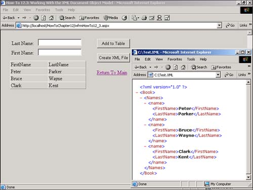

I want to have more control over the XML document as I create it. I heard that I can do this with XML DOM. How do I work with the XML Document Object Model?
In How-Tos 12.1 and 12.2, you saw two ways to independently read and write XML documents. However, what if you want to do both at the same time? To have this kind of flexibility, you need to use the XML Document Object Model, also known as DOM.
The DOM class is an XML document that is represented in memory. It allows you not only to programmatically read and write out XML documents, but also to modify those documents in memory.
Within the DOM, the XMLNode object is the base object in the DOM Tree, XMLDocument class that extends it. XMLDocument has methods that allow you to perform operations on the document as a whole. It also lets the developer work with the nodes in the entire XML document.
Both XMLNode and XMLDocument have performance and usability enhancements over prior versions.
The properties and methods of XMLNode and XMLDocument that will be used for this How-To are listed in Table 12.6.
|
Class Name |
Property/Method |
Purpose/Description |
|---|---|---|
|
XMLDocument |
LoadXML |
Loads an XML document into the XMLDocument object. In this case, it is a means to create the stub for the XML document that will be created from the dataset. |
|
XMLDocument |
DocumentElement |
Serves as the root element for the document. It is, in fact, of the type XMLElement. |
|
XMLDocument |
CreateNode |
Creates an XMLNode object. |
|
XMLElement |
AppendChild |
Appends the node created to the element specified as a child. |
|
XMLDocument |
CreateComment |
Adds a comment to the XML document. |
|
XMLNode |
AppendChild |
Appends a node to another node as a child. |
|
XMLDocument |
Save |
Saves the current XML document. |
Open and run the Visual Basic .NET-Chapter 12 solution. From the main Web page, click on the hyperlink with the caption How-To 12.3: Working with the XML Document Object Model. As with How-To 12.1, when the page loads, you can enter a few names. Enter the last and first names, and then click the button labeled Add to DataTable. When you have added a few names, click the button labeled Create XML File. Using Explorer, open the file created in C:\ called test.xml(see Figure 12.3).
Create a Web Form. Then place the Labels, TextBoxes, Buttons, and DataGrid objects as seen in Figure 12.3 on the form with the properties set as in Table 12.7.
|
Object |
Property |
Setting |
|---|---|---|
|
Label |
Text |
Last Name |
|
TextBox |
ID |
txtLastName |
|
Label |
Text |
First Name |
|
TextBox |
ID |
txtFirstName |
|
Button |
ID |
btnAdd |
|
Text |
Add to DataTable |
|
|
Button |
ID |
btnCreateXMLFile |
|
Text |
Create XML File |
|
|
DataGrid |
ID |
dgDataToWrite |
|
HyperLink |
ID |
hplReturnToMain |
|
NavigateURL |
wfrmMain.aspx |
Add the following line to the code module of the form. I place it under the line that reads Web Form Designer Generated Code.
Dim mdtData As New DataTable()
Add the code in Listing 12.6 to the Load event of the page. If the data table has not been saved to the Session object, then it is created from scratch by first creating the data columns and then adding them to the data table. The DataTable object is then saved to the Session object with the name MyDataTable. If the Session object entry already exists, it is reassigned to the module variable mdtData. Last, the data table is bound to the DataGrid object by calling the BindTheGrid routine, which is described in the next step.
Private Sub Page_Load(ByVal sender As System.Object, _
ByVal e As System.EventArgs) Handles MyBase.Load
'Put user code to initialize the page here
If (Session("MyDataTable") Is Nothing) Then
Dim dcFirstName As New DataColumn()
dcFirstName.ColumnName = "FirstName"
dcFirstName.Caption = "First Name"
mdtData.Columns.Add(dcFirstName)
Dim dcLastName As New DataColumn()
dcLastName.ColumnName = "LastName"
dcLastName.Caption = "Last Name"
mdtData.Columns.Add(dcLastName)
Session("MyDataTable") = mdtData
Else
mdtData = CType(Session("MyDataTable"), DataTable)
End If
BindTheGrid()
End Sub
Create the routine BindTheGrid, shown in Listing 12.7, in the code module for the page.
Sub BindTheGrid()
dgDataToWrite.DataSource = mdtData
dgDataToWrite.DataBind()
End Sub
Add the code in Listing 12.8 to the Click event of the btnAdd button. This routine starts off by calling the NewRow method off the mdtData data table, thus creating a new DataRow object. The two columns in drNew are replaced with the values in txtLastName and txtFirstName. The new row is added to the data table, and the text boxes are cleared. Last, mdtData is rebound to the data grid by calling BindTheGrid.
Private Sub btnAdd_Click(ByVal sender As System.Object, _
ByVal e As System.EventArgs) Handles btnAdd.Click
Dim drNew As DataRow
drNew = mdtData.NewRow()
drNew.Item("LastName") = Me.txtLastName.Text
drNew.Item("FirstName") = Me.txtFirstName.Text
mdtData.Rows.Add(drNew)
Me.txtLastName.Text = ""
Me.txtFirstName.Text = ""
BindTheGrid()
End Sub
Add the code in Listing 12.9 to the Click event of the btnCreateXMLFile button. After getting the number of rows in mdtData, an XML document is started using the LoadXML method. Next, the root element is retrieved so that nodes can then be "hung" from it, using the CreateNode and AppendChild methods. A comment is then added using the CreateComment method of xdMyData. Then, for each of the rows in the mdtData, nodName is created using CreateNode and AppendChild methods, and node on nodName is added for the LastName and FirstName. Again, these nodes are added using the CreateNode and AppendChild methods. Last, the Save method is used to save the XML document.
Private Sub btnCreateXMLFile_Click(ByVal sender As System.Object, _
ByVal e As System.EventArgs) Handles btnCreateXMLFile.Click
Dim xdMyData As New System.Xml.XmlDocument()
Dim xeRoot As System.Xml.XmlElement
Dim intCurrRow As Integer
Dim intNumRows As Integer
intNumRows = mdtData.Rows.Count - 1
With xdMyData
'-- Start the XML document
.LoadXml("<?xml version='1.0' ?><Book></Book>")
xeRoot = .DocumentElement
Dim nodRoot As System.Xml.XmlNode = _
.CreateNode(System.Xml.XmlNodeType.Element, "Names", "")
xeRoot.AppendChild(nodRoot)
'-- Add the comment
.CreateComment("This file represents names list created using the XML DOM")
For intCurrRow = 0 To intNumRows
'-- Start the current row
Dim nodName As System.Xml.XmlNode = _
.CreateNode(System.Xml.XmlNodeType.Element, "name", "")
nodName = nodRoot.AppendChild(nodName)
'-- Add the attributes (columns)
Dim nodFirstName As System.Xml.XmlNode = _
.CreateNode(System.Xml.XmlNodeType.Element, "FirstName", "")
nodFirstName.InnerText = mdtData.Rows(intCurrRow).Item("FirstName")
nodName.AppendChild(nodFirstName)
Dim nodLastName As System.Xml.XmlNode = _
.CreateNode(System.Xml.XmlNodeType.Element, "LastName", "")
nodLastName.InnerText = mdtData.Rows(intCurrRow).Item("LastName")
nodName.AppendChild(nodLastName)
Next
'-- Write the XML to file and close the writer
.Save("c:\Test.xml")
End With
End Sub

As you can see, working with the DOM takes a bit more time and work. However, when you really need to massage the data, this is the way to go!